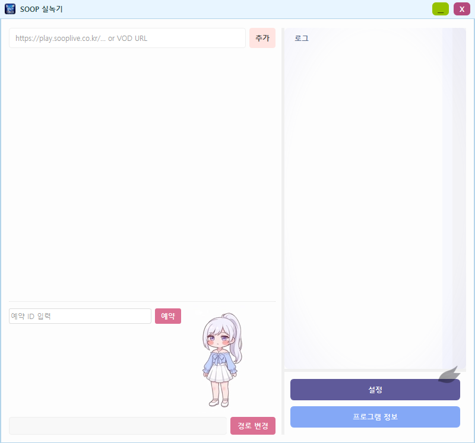
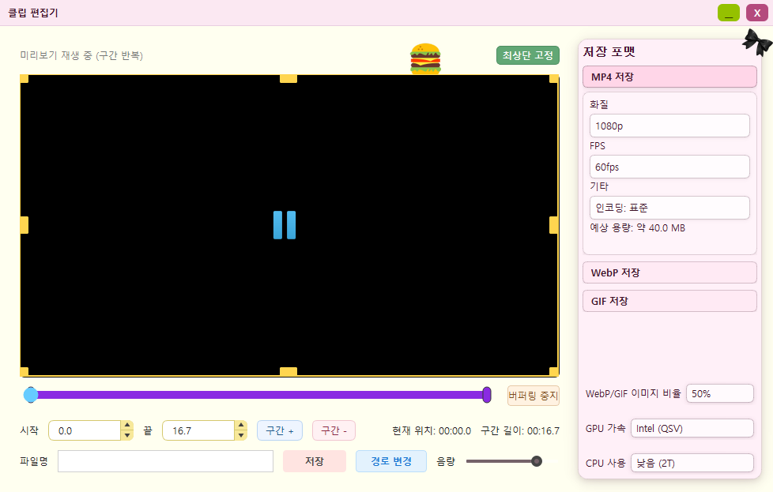
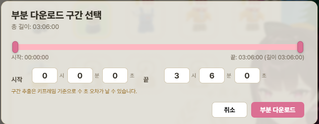

VPN 없이 고화질 실시간 녹화
별도 VPN 설정 없이도 고화질 실시간 녹화를 지원하며, 녹화 예약이 가능해 원하는 시간에 자동으로 녹화를 시작할 수 있습니다.
VPN 없이도 고화질 실시간 녹화가 가능하며, 실시간 클립 저장과 VOD 다운로드를 한 번에 처리할 수 있습니다. 길이가 긴 VOD도 필요한 구간만 잘라 빠르게 다운로드할 수 있습니다.

동봉된 압축파일에는 비밀번호가 설정되어 있습니다. 비밀번호를 모르시는 경우 개발자에게 문의해 주세요.
별도 VPN 설정 없이도 고화질 실시간 녹화를 지원하며, 녹화 예약이 가능해 원하는 시간에 자동으로 녹화를 시작할 수 있습니다.
방송을 보면서 필요한 장면을 바로 클립으로 딸 수 있어, 별도 후작업 없이 원하는 구간을 빠르게 확보할 수 있습니다.
VOD 전체 다운로드는 물론, 길이가 긴 VOD도 필요한 구간만 잘라 더 빠르게 내려받을 수 있습니다.

